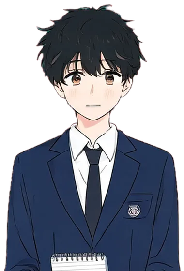
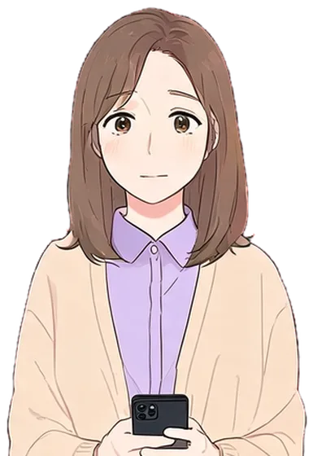
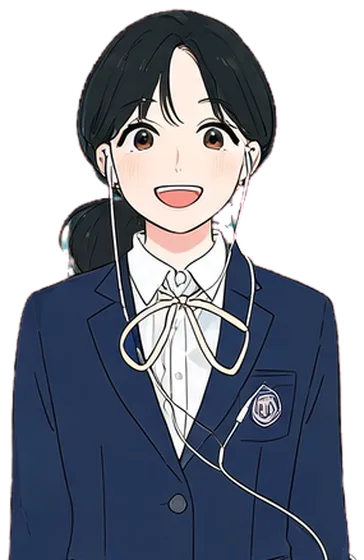

역지사지 시뮬레이터
상대의 하루를 직접 버텨 보면 왜 그랬는지 알게 된다. 쌤이나 고딩이 되어 AI NPC와 대화하며 하루를 사는 롤플레잉 미연시.



신뢰 게이지를 움직이면 표정이 바뀌어요
LED를 누르거나 옆으로 끌어서 신뢰를 직접 맞출 수 있어요. 키보드는 ← → 키.
실제 게임에서는 NPC와 대화할 때마다 신뢰 게이지가 이렇게 움직여요.
먼저 영상으로 보기
오늘 하루, 누구로 살아 볼래?
루트를 고르고 NPC와 대화해 보세요. 인물마다 호감도가 따로 쌓이고, 앞에서 고른 선택이 뒤 장면을 바꿔요. 루트마다 엔딩이 3개(좋음 · 보통 · 나쁨) 있어요. 실제 게임에서는 AI가 NPC를 연기하고, 직접 입력한 말까지 판단해요.
그림은 AI 생성 이미지예요 (Higgsfield Seedream · Google Gemini). 대사와 선택지는 데모용 예시예요. 실제 게임은 AI가 상황과 플레이어 말에 맞춰 NPC 대사를 새로 만들고, 인터넷이 끊기면 이런 미리 쓴 대본으로 돌아가요. 숫자 키 1~4로 고를 수 있어요.
오늘 하루에 등장하는 사람들
모두 나쁜 사람은 없어요. 각자 사정이 있을 뿐이에요. 숨은 사정은 엔딩의 "서로 몰랐던 일"에서 드러나요. 맛보기에는 그림 있는 4명이 나오고, 교감 선생님과 단톡방은 실제 게임에서 나와요. 그림을 누르면 표정이 바뀌어요.
1번 주제 · 소통과 공감으로 서로 이해하는 학교
2026 울산 AI 해커톤 탐구 주제는 교육공동체 신뢰회복이고, 4가지 세부 주제 중 하나를 고른다. 우리는 1번을 골랐다.
| 1번 주제 설명에 있는 말 | 역지사지 시뮬레이터에서는 |
|---|---|
| 학생·교직원·학부모는 같은 상황에서도 서로 다른 생각과 감정을 가질 수 있다 | 쌤 루트와 고딩 루트로 같은 하루를 각각 살아 본다. |
| 표현 방식이 달라 생기는 오해를 줄인다 | NPC에게 어떻게 말하느냐에 따라 신뢰 게이지와 NPC 반응이 바뀐다. |
| 서로의 입장을 이해한다 | 끝나면 “서로 몰랐던 일 TOP 3”를 보여 주고, 다음 판은 역할을 바꾼다. |
| 원활하게 소통할 수 있는 방안 | AI가 엔딩에서 “서로 몰랐던 일”과 다음에 써 볼 말을 알려 준다. |
4번 주제와도 닿아 있어요. 혼자 잘해서는 안 되고 서로 도와야 게이지가 오르는 구조라서요. 다만 제출할 때 고르는 주제는 1번이에요.
바쁜 순간은 손으로 겪기
대화 장면 사이에 그 사람의 바쁜 순간을 짧은 미니게임으로 겪어요. 결과는 같은 신뢰 게이지에 반영되고, 신뢰가 높을수록 쉬워져요.
민원 전화 받기
쌤학부모 전화가 세 통 와요. 벨이 울리면 전화를 받고, 민원에 맞는 대답을 고르세요.
최고 기록: –
결재 도장 연타
쌤제한 시간 안에 서류에 도장을 최대한 많이 찍으세요. 신뢰가 높으면 시간이 늘어나요.
최고 기록: –
쌤 루트 NPC와 하루 예시
학부모 NPC
AI 대화 · 전화 장면민원을 들고 전화한다. 말투에 따라 누그러지거나 날카로워진다.
학생 NPC
AI 대화 · 쉬는 시간바쁠 때 질문하러 온다. 어떻게 돌려보내느냐가 중요하다.
결재 도장
미니게임쌓이는 서류를 쾅쾅 눌러 처리한다.
질문 타이밍
고딩쌤 불이 초록일 때만 질문하세요. 빨강일 때 가면 신뢰가 깎여요.
성공 0 · 실패 0
할 일 카드 러시
고딩할 일 카드가 사라지기 전에 눌러서 제출하세요. 보라색 딴짓 카드는 누르면 안 돼요.
제출 0 · 놓침 0 · 딴짓 0
고딩 루트 NPC와 하루 예시
쌤 NPC
AI 대화 · 교무실통화 중이거나 서류에 묻혀 있다. 타이밍과 말투가 중요하다.
친구 NPC
AI 대화 · 교실같이 기준표를 몰라 헤맨다. 같이 물어볼지 정한다.
할 일 카드
미니게임마감 전에 과제 카드를 제출한다.
민원 내용과 대답, 하루 예시는 게임용으로 만든 예시예요. 실제 게임에서는 AI가 상황에 맞게 새로 만들어요. 실제 게임에서는 대화 장면 사이에 이 미니게임이 짧게 들어가요.
같은 장면, 다른 하루
서로 하루에 무슨 일을 하는지 모르니까 오해가 쌓인다. 말로 설명을 듣는 것보다 그 사람이 되어 대화해 보는 쪽이 빠르다.
“질문하러 가면 맨날 바쁘다고 하시고 폰만 보셔.”
“수업 시간엔 조용하다가 마감 직전에만 몰려와.”
보이는 건 일부뿐
학생은 교실 밖 쌤의 일을 못 보고, 쌤은 학원과 과제가 겹친 밤을 못 본다.
타이밍이 엇갈림
학생이 물어볼 수 있는 쉬는 시간이 쌤에게는 전화와 서류를 처리하는 시간이다.
같은 말, 다른 뜻
“지금 바빠”는 쌤에게는 사정 설명이고, 학생에게는 “오지 마”로 들린다.
- 설명 대신 체험 · 상대가 되어 하루를 직접 산다.
- 정답 대신 대화 · AI NPC와 말을 주고받으며 어떤 말이 어떻게 들리는지 겪는다.
- 점수 대신 신뢰 · 상대 입장을 헤아린 말일수록 신뢰 게이지가 오른다.
두 인용문과 세 가지 엇갈림은 설명을 위한 예시예요. 실제 발표에는 교내 설문 결과를 넣을 예정이에요.
한 판은 이렇게 흘러간다
루트를 고르면 아침, 쉬는 시간, 점심, 방과 후 장면을 NPC와 대화하며 지나간다. 한 판은 3~5분을 목표로 한다.
- 1
루트 고르기
쌤 루트나 고딩 루트를 고른다. 평소 내 자리와 반대 루트를 고르면 더 재밌다.
- 2
장면마다 NPC와 대화
학부모, 학생, 쌤 NPC가 말을 건다. 선택지를 고르거나, 직접 입력하거나, 옵션으로 말해서 대답한다.
- 3
AI가 대답을 읽는다
내 말이 상대 입장을 얼마나 헤아렸는지 AI가 판단해서 신뢰 게이지를 올리거나 내린다. NPC 반응도 그에 맞게 바뀐다.
- 4
장면 사이 미니게임
민원 전화 받기, 결재 도장 연타, 질문 타이밍처럼 그 사람의 바쁜 순간을 짧게 겪는다. 신뢰가 높을수록 쉬워진다.
- 5
엔딩과 반대 루트
게이지에 따라 엔딩이 갈리고, AI가 “서로 몰랐던 일 TOP 3”를 정리한다. 다음 판은 반대 루트로 같은 하루를 본다.
같은 하루, 다른 주인공
| 쌤 루트 | 고딩 루트 | |
|---|---|---|
| 만나는 NPC | 학부모, 학생, 동료 쌤 | 쌤, 친구, 학부모(집) |
| 장면 예시 | 아침 민원 전화, 쉬는 시간 질문, 방과 후 상담 | 통화 중인 쌤, 기준표 질문, 밤 10시 과제 |
| 미니게임 | 민원 전화 받기, 결재 도장 연타 | 질문 타이밍, 할 일 카드 러시 |
| 신뢰가 오를 때 | 걱정을 먼저 받아 주고 할 일을 말한다 바빠도 시간을 약속한다 | 상황을 보고 타이밍을 맞춘다 모르는 걸 콕 집어 묻는다 |
| 신뢰가 내려갈 때 | 탓하거나 말을 자른다 | 무작정 조르거나 그냥 피한다 |
미연시의 호감도 = 신뢰 15칸
미연시에서 호감도가 쌓이듯, 대화할 때마다 신뢰가 오르내린다. 칸 수에 따라 미니게임 난이도와 엔딩이 달라진다.
맨 위 게이지, 미연시 맛보기, 미니게임이 모두 같은 게이지를 써요. 미연시에서는 여기에 더해 인물마다 호감도가 따로 쌓여요. 맛보기는 루트마다 엔딩 3개, 실제 게임은 인물별 엔딩까지 늘릴 계획이에요.
AI가 NPC가 된다
NPC 연기
장면, 성격, 지금 신뢰를 받아서 학부모·학생·쌤의 대사를 그때그때 만든다.
대답 판단
플레이어가 직접 쓴 말을 읽고, 상대 입장을 헤아렸는지 판단해서 신뢰 변화(−2~+3)와 이유를 정한다.
엔딩 분석
한 판의 대화 기록을 읽고 “서로 몰랐던 일 TOP 3”와 다음에 써 볼 말을 정리한다.
판마다 다른 대화
NPC가 플레이어 말에 맞춰 반응한다. 같은 루트를 해도 매번 대화가 달라진다.
인터넷이 끊겨도 시연 가능
미리 써 둔 대본과 선택지로 진행한다. AI 답이 늦거나 막히면 이쪽으로 바로 넘어간다.
- 실명과 개인정보는 넣지 않는다. NPC는 모두 가상 인물이고, 플레이어 이름도 받지 않는다.
- API 키는 노트북 서버에만 둔다. 웹페이지와 GitHub에는 절대 올리지 않는다.
- 호출 수와 글자 수에 상한을 둔다. 한 판 호출 횟수, 입력 80자 제한, 서비스 쪽 월 지출 한도를 낮게 설정한다.
- AI 문장은 띄우기 전에 거른다. 길이와 금지어를 확인하고, 이상하면 미리 써 둔 대사로 바꾼다.
말로 대답해 보기
선택지 + 직접 입력
시끄러운 행사장에서도 확실하게 돌아간다. 패드 화면 키보드로 짧게 입력한다.
누르고 말하기
버튼을 누르는 동안만 브라우저 음성 인식으로 듣는다. NPC 대사는 브라우저 읽기 기능으로 소리 낸다. 둘 다 별도 요금 없이 쓸 수 있는 기능이다.
브라우저 음성 인식은 기기와 브라우저마다 지원이 달라요. 크롬에서 먼저 시험하고, 패드에서 한국어가 잘 되는지는 대회 전에 직접 확인해야 해요. 안 되면 입력으로 진행해요.
말 한마디가 NPC 대답이 되기까지
- 웹앱 입력한 말을 서버로 보낸다. 80자를 넘으면 자른다.
- 서버 장면 정보, NPC 성격, 지금 신뢰, 최근 대화 몇 줄을 묶어 AI에 보낸다.
- AI NPC 대답 한 줄, 신뢰 변화 +2, 이유 한 줄을 정해진 형식으로 돌려준다.
- 서버 형식과 금지어를 확인하고, 이상하거나 5초 넘게 늦으면 대본 대사로 바꾼다.
- 화면 NPC 표정과 대사가 바뀌고 신뢰 게이지가 한 칸 오른다.
부스에서 2분이면 충분
20초 · 루트 고르기
심사위원에게 평소 자리와 반대 루트를 권한다. 쌤이면 고딩 루트, 학생이면 쌤 루트.
70초 · 대화하기
한 장면은 선택지로, 한 장면은 직접 입력으로 대답한다. AI NPC가 그 말에 반응하는 걸 보여 준다.
30초 · 엔딩
“서로 몰랐던 일 TOP 3”를 보고, 같은 하루를 반대 루트로 하면 어떻게 될지 이야기한다.
패드가 두 대면 두 명이 각자 다른 루트를 동시에 해요. 노트북 한 대로도 시연할 수 있어요.
이것만은 무조건 돌아가게
꼭 만든다
- 미연시 화면 (배경, 캐릭터, 대사창, 선택지)
- 쌤 루트, 고딩 루트 각 3~4장면
- 15칸 신뢰 게이지와 엔딩 3종
- AI 끔 모드 (대본 파일로 끝까지 진행)
- AI 켬 모드 (NPC 대사, 직접 입력 판단)
시간 되면 붙인다
- 장면 사이 미니게임
- AI 엔딩 분석 (TOP 3)
- 음성으로 말하기, NPC 목소리
- 학부모 루트
- 1일차 낮대본 파일 형식, 미연시 화면, AI 끔 모드
- 1일차 저녁서버와 AI 연결, 대답 판단
- 1일차 밤대사 다듬기, 미니게임이나 음성
- 2일차 오전슬라이드, 시연 리허설
진행 순서는 계획(안)이에요. 대회 시간표가 나오면 맞춰서 바꿔요.
세 명, 세 자리
개발
웹앱과 서버, AI 연결, 신뢰 계산, AI 끔 모드
디자인
배경과 캐릭터 그림, 대사창과 엔딩 화면, 슬라이드
시나리오 · 발표
장면 대본과 NPC 성격, 교내 설문, 발표 대본
한 판 하고 나면
- 상대가 되어 하루를 살아 보며 그 사람의 사정을 몸으로 이해한다.
- 같은 말이 상대에게 어떻게 들리는지 NPC 반응으로 바로 확인한다.
- 엔딩의 “서로 몰랐던 일”과 “다음에 써 볼 말”이 실제 대화를 시작할 거리가 된다.
- 웹앱이라 링크 하나로 학교 축제, 학부모 총회, 수업 시간에 바로 쓸 수 있다.
- 대본 파일만 추가하면 학부모 루트, 교직원 루트 같은 새 이야기를 붙일 수 있다.